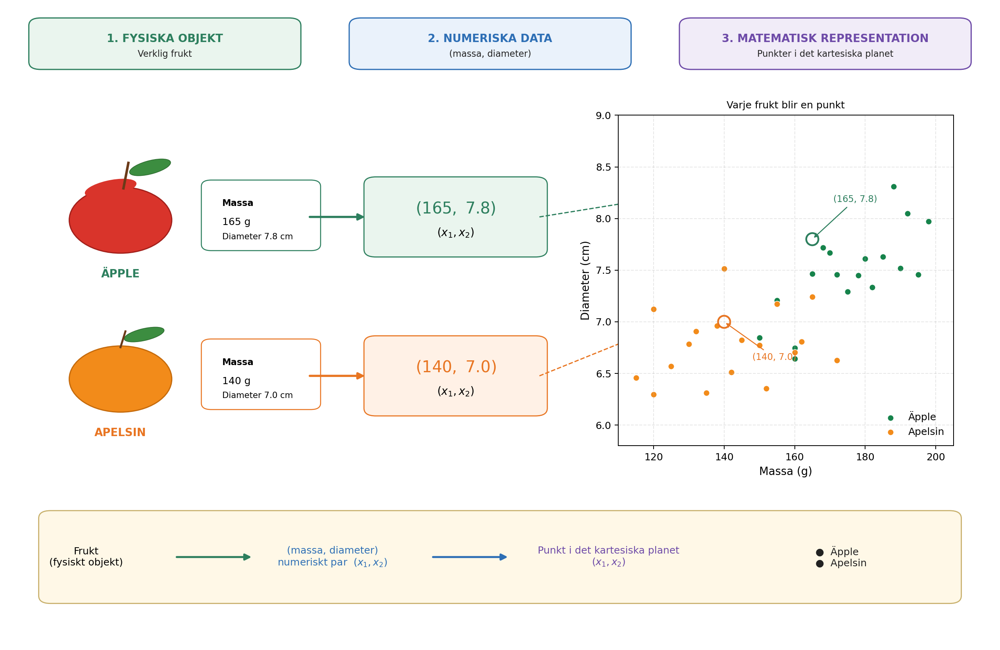
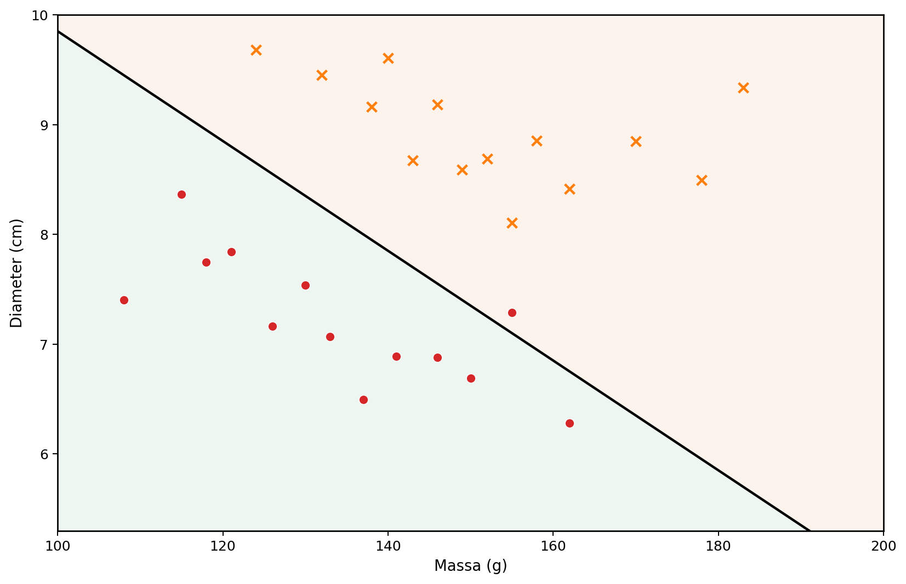
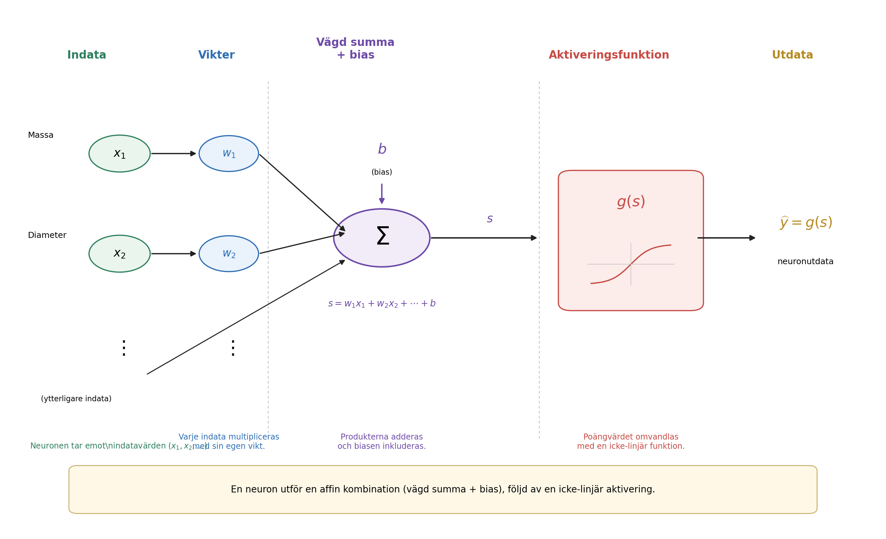
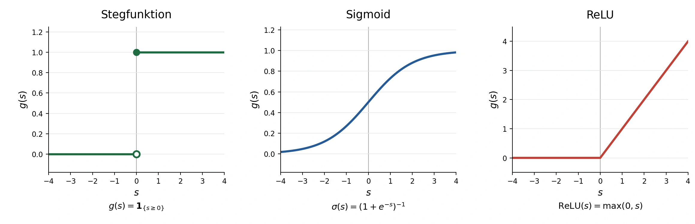
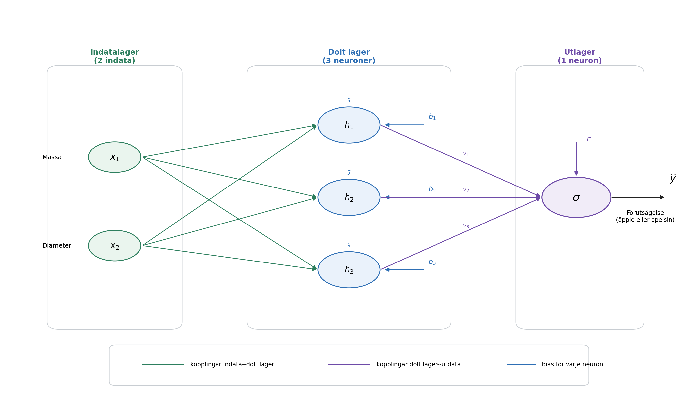
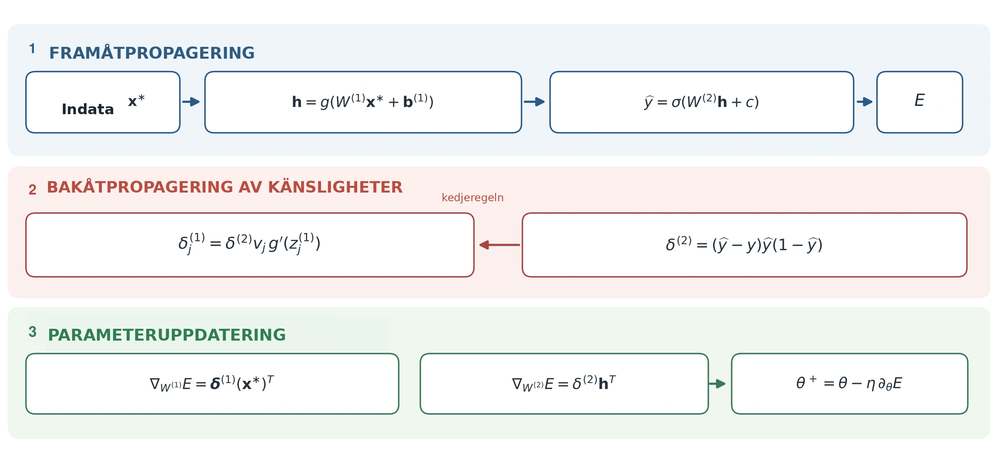
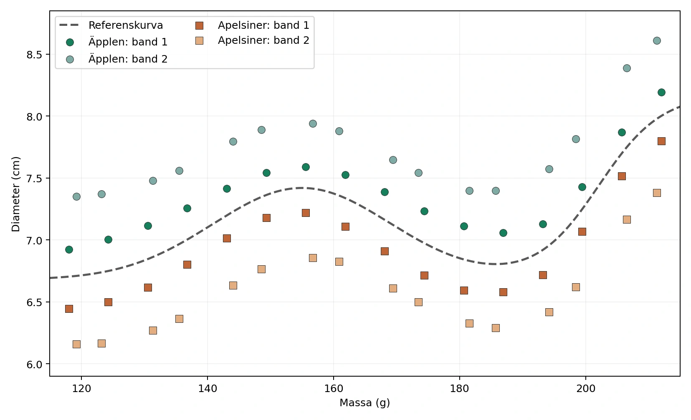
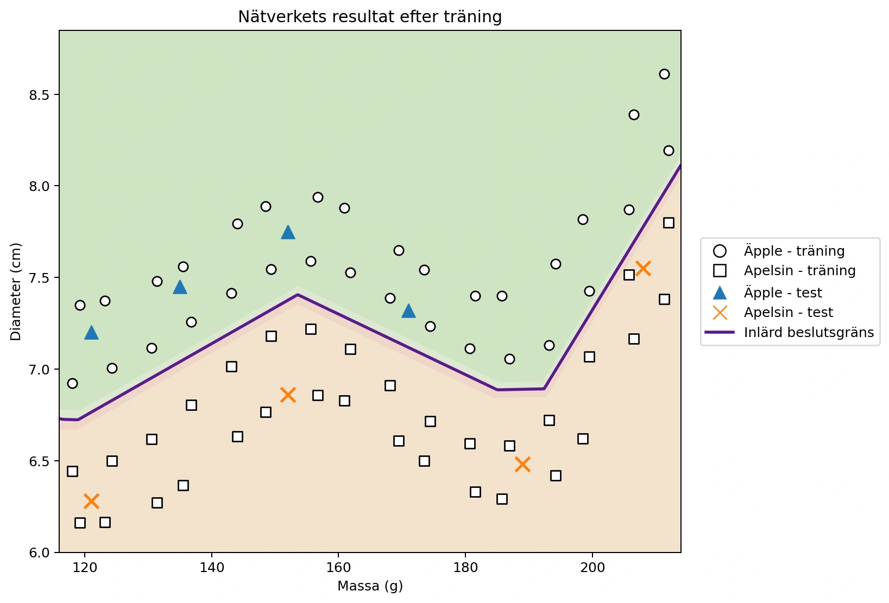

När kan en dator lära sig?
I vardagen fattar vi klassificeringsbeslut nästan utan att märka det. När vi ser en frukt identifierar vi den snabbt som ett äpple eller en apelsin; när ett meddelande kommer till telefonen skiljer vi ett legitimt samtal från oönskad reklam; i medicinska analyser kan flera mätningar kombineras för att stödja ett beslut; och i finansiella institutioner bedöms flera uppgifter innan kredit beviljas. I alla dessa exempel vägs flera egenskaper samman för att ge ett svar.
I många traditionella datorprogram skrivs reglerna som ger detta svar uttryckligen av programmeraren. Detta fungerar bra när reglerna är kända och kan formuleras tydligt. Metoden blir mindre effektiv när data varierar mycket eller när det är svårt att i förväg formulera alla villkor som krävs för ett bra beslut. Det leder till en naturlig fråga:
Kan vi bygga ett program som lär sig en beslutsregel från exempel i stället för att få regeln given i förväg?
Detta är en av de centrala idéerna inom maskininlärning, ett område inom artificiell intelligens som behandlar metoder för att anpassa modeller till data . I ett övervakat inlärningsproblem får algoritmen exempel tillsammans med deras korrekta svar, och vi söker en modell som också kan ge användbara förutsägelser för fall som inte användes under träningen. Bland de många modeller som utvecklats för detta ändamål har artificiella neurala nätverk blivit viktiga i tillämpningar som bildigenkänning, språkbehandling, signalanalys och tidsserieprognoser .
Användningen av neurala nätverk som en bro mellan matematik, beräkningar och skolundervisning har redan diskuterats i Professor de Matemática Online av Batista och Martins , som presenterar en aktivitet med lärarutbildning, Python och sifferigenkänning. Den här artikeln följer en kompletterande väg. Vårt huvudmål är att synliggöra den interna matematiken i ett litet neuralt nätverk, med början i analytisk geometri och stegvis vidare till gradientberäkning och en manuell implementering av bakåtpropagering.
Trots sofistikationen i moderna tillämpningar kan den matematiska kärnan i ett neuralt nätverk introduceras med relativt välkända idéer. På en grundläggande nivå är ett neuralt nätverk en sammansättning av funktioner vars parametrar anpassas utifrån data. Vi börjar med ett enkelt geometriskt problem, tolkar om en separerande linje som en artificiell neuron, kopplar samman flera neuroner, studerar aktiveringsfunktionernas roll och visar hur derivator kan användas för att automatiskt justera nätverkets parametrar. Därefter implementerar vi ett komplett litet exempel i Python med en direkt motsvarighet mellan ekvationerna och koden.
Att representera problemet matematiskt
För att förstå hur ett neuralt nätverk fungerar börjar vi med ett avsiktligt enkelt problem: att skilja äpplen från apelsiner. En frukt har många egenskaper som kan vara användbara för denna uppgift, exempelvis färg, massa, diameter, textur och arom. En första matematisk modell behöver dock inte omfatta all denna komplexitet. Vi använder endast två lätt mätbara storheter: massa i gram och diameter i centimeter.
Varje frukt representeras därför av ett ordnat par \[(x_1,x_2),\] where \[x_1=\text{massa} \qquad\text{and}\qquad x_2=\text{diameter}.\]
Paret \((155,\;7.2)\) representerar alltså en frukt med massan \(155\) g och diametern \(7.2\) cm. Genom att ersätta det fysiska objektet med två numeriska mätvärden associerar vi varje frukt med en punkt i det kartesiska planet: den första koordinaten anger massan och den andra diametern. Figur 1 illustrerar denna representation för en hypotetisk uppsättning äpplen och apelsiner.

Denna omvandling förändrar problemets skenbara natur. I stället för att direkt fråga hur man känner igen ett äpple eller en apelsin kan vi ställa en geometrisk fråga: hur kan punkterna som tillhör de två klasserna separeras i planet? Detta perspektivskifte är grundläggande inom maskininlärning. Bilder, texter, ljud och experimentella signaler måste alla omvandlas till numeriska representationer innan de kan behandlas av en algoritm. I vårt exempel har varje objekt bara två koordinater; i verkliga tillämpningar kan en representation innehålla hundratals, tusentals eller till och med miljontals komponenter. Principen är densamma: varje exempel associeras med en samling tal, och modellen söker en regel som avbildar denna representation till det önskade svaret.
Vi börjar med den enklaste tillgängliga geometriska regeln och frågar om en enda rät linje kan separera äppelpunkterna från apelsinpunkterna på ett tillfredsställande sätt.
En rät linje som klassificerare
När varje frukt har representerats av en punkt i det kartesiska planet blir klassificeringen ett geometriskt problem: kan en rät linje separera äpplena från apelsinerna? Denna fråga fångar grundidén i en viktig familj av maskininlärningsmetoder som kallas linjära klassificerare.
Betrakta en linje som går genom punktmolnet, som i Figur 2. Linjen delar planet i två halvplan. Om de flesta äppelpunkterna ligger på ena sidan och de flesta apelsinpunkterna på den andra kan en ny frukts position relativt linjen användas som klassificeringsregel. Efter att dess massa och diameter har mätts representerar vi frukten med en punkt och bestämmer på vilken sida av linjen punkten ligger.

I det kartesiska planet \((x_1,x_2)\) kan en linje beskrivas av \[w_1x_1+w_2x_2+b=0, \qquad (w_1,w_2)\neq(0,0).\]
Vektorn \((w_1,w_2)\) är vinkelrät mot linjen och bestämmer därför dess orientering, medan parametern \(b\) bidrar till dess läge. Denna representation har en liten redundans: om \(w_1\), \(w_2\) och \(b\) multipliceras med samma icke-nollkonstant fås exakt samma linje. Parametrarna som beskriver gränsen är alltså inte entydiga. Deras numeriska tolkning beror också på variablernas skalor. Eftersom massa mäts i gram och diameter i centimeter bör storleken på \(w_1\) och \(w_2\) inte jämföras utan hänsyn till de olika enheterna.
Linjeekvationen ger i sig ett enkelt sätt att avgöra på vilken sida av gränsen en punkt ligger. Definiera poängvärdet \[s(x_1,x_2)=w_1x_1+w_2x_2+b.\]
Om \(s(x_1,x_2)=0\) ligger punkten på linjen. Om \(s(x_1,x_2)>0\) ligger den i det ena halvplanet, och om \(s(x_1,x_2)<0\) ligger den i det andra. Om vi bestämmer att positiva poängvärden motsvarar äpplen och negativa poängvärden apelsiner blir regeln \[\begin{cases} s(x_1,x_2)\geq 0 & \Longrightarrow \text{äpple},\\ s(x_1,x_2)<0 & \Longrightarrow \text{apelsin}. \end{cases}\]
Betrakta till exempel gränsen som definieras av \[w_1=\frac{1}{10}, \qquad w_2=2, \qquad b=-30.\] För en frukt med massan \(160\) g och diametern \(7.8\) cm gäller \[\begin{aligned} s &=\frac{1}{10}\times160+2\times7.8-30\\ &=16+15.6-30\\ &=1.6. \end{aligned}\] Eftersom poängvärdet är positivt ligger punkten i det halvplan som vi har associerat med äpplen. Klassificeraren skulle därför märka frukten som ett äpple.
Inte varje val av \(w_1\), \(w_2\) och \(b\) ger en bra klassificering. Vissa linjer separerar de två grupperna dåligt, medan andra ger färre fel. Inlärningsproblemet består just i att använda tidigare etiketterade exempel för att bestämma parametervärden som minskar ett mått på modellens fel. I stället för att programmera linjens läge direkt vill vi att algoritmen justerar dess koefficienter utifrån data.
En enda linje kan fungera bra när klasserna är ungefär linjärt separerbara. Mer komplicerade datamängder kan kräva en icke-linjär gräns. Innan vi behandlar den begränsningen tolkar vi om den nyss konstruerade klassificeraren som en elementär beräkningsenhet: en artificiell neuron.
Den artificiella neuronen
I föregående avsnitt användes uttrycket \[s=w_1x_1+w_2x_2+b\] för att avgöra på vilken sida av en linje en frukt ligger. Samma uttryck kan ses som det första steget i beräkningen som utförs av en artificiell neuron. En neuron tar emot numeriska indata, kombinerar dem med hjälp av vikter och en bias och applicerar därefter en matematisk funktion för att få sin utdata.
I vårt exempel är indata massan \(x_1\) och diametern \(x_2\). Varje indata multipliceras med en parameter som kallas en vikt; produkterna adderas tillsammans med en konstant term \(b\), kallad bias. Figur 3 visar denna beräkning schematiskt.

Vikterna bestämmer hur förändringar i indata påverkar poängvärdet. Om \(x_2\) och alla andra storheter hålls fasta ändrar en variation \(\Delta x_1\) värdet på \(s\) med \(w_1\Delta x_1\). På motsvarande sätt ändrar en variation \(\Delta x_2\) poängvärdet med \(w_2\Delta x_2\). Även tecknet spelar roll: en positiv vikt gör att en ökning av indata ökar poängvärdet, medan en negativ vikt ger motsatt effekt. Denna tolkning måste användas försiktigt när olika variabler har olika enheter och skalor. Därför normaliserar eller standardiserar praktiska implementationer ofta sina indata före träning.
Biasen \(b\) är den konstanta termen i den affina transformationen. Geometriskt gör den det möjligt att förskjuta beslutsgränsen. Om \(b=0\) tvingar ekvationen \[w_1x_1+w_2x_2=0\] linjen att gå genom origo. Med en bias kan gränsen flyttas till andra lägen. Ekvivalent gäller att när \(x_1=x_2=0\) är poängvärdet helt enkelt \(s=b\).
Poängvärdet behöver inte vara neuronens slutliga utdata. I allmänhet appliceras en aktiveringsfunktion \(g\) på det: \[\widehat{y}=g(s)=g\left(w_1x_1+w_2x_2+b\right).\] Beräkningen har alltså två steg, \[\begin{aligned} s &= w_1x_1+w_2x_2+b,\\[4pt] \widehat{y} &= g(s). \end{aligned}\]
Med parametervärdena från föregående avsnitt får vi \(s=1.6\). Om vi väljer stegfunktionen \[g(s)= \begin{cases} 1, & s\geq0,\\ 0, & s<0, \end{cases}\] blir \(\widehat{y}=g(1.6)=1\). Enligt vår konvention klassificeras frukten som ett äpple. Med denna aktivering ändras beslutet när \(s\) passerar noll, så klassgränsen är exakt \[w_1x_1+w_2x_2+b=0.\]
En enskild neuron är alltså ett enkelt matematiskt objekt med justerbara parametrar. Dess verkliga betydelse framträder när många sådana enheter kopplas samman. Innan vi bygger ett nätverk behöver vi dock förstå varför aktiveringsfunktionen är avgörande.
Varför behöver vi en aktiveringsfunktion?
En neuron beräknar först ett poängvärde med en affin transformation och applicerar därefter en aktiveringsfunktion. Detta andra steg är avgörande för att ett neuralt nätverk ska kunna representera komplicerade samband. För att se varför kan vi tänka oss ett nätverk utan aktiveringsfunktioner. Varje enhet skulle då ha formen \[y=w_1x_1+w_2x_2+b.\]
Som ett endimensionellt exempel, anta att en första enhet ger \[h=ax+b\] och att en andra beräknar \[y=ch+d.\] Insättning ger \[y=c(ax+b)+d=acx+(cb+d),\] vilket fortfarande är en affin funktion av \(x\). Samma påstående gäller i flera dimensioner: en sammansättning av affina transformationer är fortfarande affin. Att lägga till många lager utan en icke-linjär operation gör därför inte nätverket i grunden mer uttrycksfullt; hela sammansättningen skulle kunna ersättas av en enda affin transformation.
En aktiveringsfunktion bryter denna begränsning. Efter att ha beräknat poängvärdet \(s\) applicerar neuronen en vanligen icke-linjär avbildning \[h=g(s).\] När flera sådana enheter kopplas samman kan den resulterande sammansättningen inte längre reduceras till en enda affin transformation. Därmed kan nätverket konstruera mer komplicerade beslutsgränser.
Den enklaste aktiveringen är stegfunktionen, \[g(s)= \begin{cases} 1, & s\geq0,\\ 0, & s<0. \end{cases}\] Den ger ett binärt beslut och är mycket användbar för att förstå klassificering. Dess derivata är emellertid noll för \(s\neq0\) och odefinierad vid \(s=0\). Eftersom gradientbaserad träning använder derivator för att avgöra hur parametrarna ska ändras är stegfunktionen inte lämplig för denna träningsmekanism.
Ett alternativ är sigmoidfunktionen, \[\sigma(s)=\frac{1}{1+e^{-s}}.\] Den avbildar varje reellt tal till ett värde strikt mellan \(0\) och \(1\). För mycket negativa \(s\) närmar sig utdata \(0\); för mycket positiva \(s\) närmar de sig \(1\); mellan dessa ytterligheter är övergången mjuk. Sigmoidfunktionen är deriverbar överallt, med \[\sigma'(s)=\sigma(s)\bigl(1-\sigma(s)\bigr).\] Eftersom dess utdata ligger mellan \(0\) och \(1\) används den ofta i utlagret hos en binär klassificerare. Med en probabilistisk formulering och en lämplig förlustfunktion kan utdata tolkas som en skattning av sannolikheten för klassen som representeras av \(1\). I dolda lager kan sigmoidfunktionen dock skapa ett problem: för indata med stort absolutbelopp blir derivatan mycket liten, vilket bidrar till problemet med försvinnande gradienter i djupa nätverk.
En ofta använd aktivering i dolda lager är ReLU (Rectified Linear Unit), \[\operatorname{ReLU}(s)=\max(0,s) = \begin{cases} 0, & s<0,\\ s, & s\geq0. \end{cases}\] Även om ReLU består av två linjära delar är funktionen inte globalt linjär. Dess derivata är \(0\) för \(s<0\) och \(1\) för \(s>0\). Vid \(s=0\) finns den vanliga derivatan inte, och programvaruimplementationer använder en konvention för gradienten. För positiva indata minskar derivatan inte när \(s\) växer, vilket undviker en av sigmoidfunktionens mättnadsmekanismer.
Figur 4 jämför dessa tre aktiveringar visuellt: stegfunktionens abrupta hopp, sigmoidfunktionens mjuka övergång och ReLU:s förändring i lutning.

Deras viktigaste egenskaper sammanfattas nedan.
| Funktion | Utdata | Derivata | Typisk användning |
|---|---|---|---|
| Steg | \(\{0,1\}\) | Noll för \(s\neq0\); odefinierad vid \(s=0\) | Historiska modeller och didaktiska exempel |
| Sigmoid | \((0,1)\) | Finns för varje \(s\) | Utlager vid binär klassificering |
| ReLU | \([0,\infty)\) | \(0\) för \(s<0\) och \(1\) för \(s>0\) | Dolda lager |
Detaljerna hos dessa funktioner skiljer sig åt, men deras gemensamma konceptuella roll är att införa icke-linjäritet. Det är denna icke-linjäritet som gör att det lilla nätverket i nästa avsnitt kan representera samband som en enda rät linje inte kan fånga.
För läsare som vill gå vidare ger Haykin en klassisk behandling av neurala nätverk, medan Goodfellow, Bengio och Courville diskuterar aktiveringsfunktioner och träning av djupa nätverk i ett bredare sammanhang. Nielsens fritt tillgängliga text är särskilt lättillgänglig för att utveckla intuition om neuroner, aktiveringar och inlärning.
Att bygga ett litet neuralt nätverk
Vi betraktar nu ett nätverk med två indata, ett dolt lager med tre neuroner och en utneuron. Indata är fortfarande \[x_1=\text{massa}, \qquad x_2=\text{diameter},\] och båda matas till varje dold neuron, som visas i Figur 5.

Låt utdata från det dolda lagret vara \(h_1\), \(h_2\) och \(h_3\). Varje neuron tar emot samma två indata men har sina egna vikter och sin egen bias: \[\begin{aligned} h_1&=g\left(w_{11}x_1+w_{12}x_2+b_1\right),\\[4pt] h_2&=g\left(w_{21}x_1+w_{22}x_2+b_2\right),\\[4pt] h_3&=g\left(w_{31}x_1+w_{32}x_2+b_3\right). \end{aligned}\]
Även om alla tre neuroner tar emot samma massa och diameter kan de ge olika svar eftersom deras parametrar skiljer sig åt. Under träningen justeras parametrarna så att de mellanliggande aktiveringarna blir användbara för klassificeringen.
De tre storheterna \(h_1\), \(h_2\) och \(h_3\) skickas därefter till utneuronen, som beräknar \[s_{\mathrm{out}}=v_1h_1+v_2h_2+v_3h_3+c\] och ger \[\widehat{y}=g_{\mathrm{out}}\left(s_{\mathrm{out}}\right).\] För vårt binära problem använder vi sigmoidaktivering i utlagret: \[\widehat{y}=\sigma\left(v_1h_1+v_2h_2+v_3h_3+c\right), \qquad 0<\widehat{y}<1.\]
Med \(y=1\) för äpple och \(y=0\) för apelsin ger tröskeln \(0.5\) klassbeslutet \[\widehat{y}\geq0.5 \Longrightarrow \text{äpple}, \qquad \widehat{y}<0.5 \Longrightarrow \text{apelsin}.\] Värden nära \(1\) är därmed starkt förknippade med äpplen, medan värden nära \(0\) är förknippade med apelsiner. Som tidigare påpekats kräver en numerisk tolkning av \(\widehat{y}\) som sannolikhet ytterligare antaganden om modellen och dess träning. För klassificeringsregeln som används här räcker det att betrakta \(\widehat{y}\) som en kontinuerlig nätverksutdata.
Den centrala egenskapen hos denna arkitektur är mellanrepresentationen \[(x_1,x_2) \longrightarrow (h_1,h_2,h_3) \longrightarrow \widehat{y}.\] Nätverket tar emot två egenskaper och konstruerar tre nya storheter innan det slutliga svaret produceras. Dessa aktiveringar väljs inte manuellt: de beror på vikterna och biasparametrarna och förändras därför när parametrarna tränas.
Trots sin ringa storlek har nätverket redan tretton justerbara parametrar. De tre dolda neuronerna innehåller \[3(2+1)=9\] parametrar, och utneuronen bidrar med \[3+1=4.\] Alltså, \[9+4=13.\]
Samma parameterantal blir tydligt i matrisnotation. Definiera \[\mathbf{x}= \begin{bmatrix} x_1\\x_2 \end{bmatrix}, \qquad W^{(1)}= \begin{bmatrix} w_{11}&w_{12}\\ w_{21}&w_{22}\\ w_{31}&w_{32} \end{bmatrix}, \qquad \mathbf{b}^{(1)}= \begin{bmatrix} b_1\\b_2\\b_3 \end{bmatrix}.\] Då kan det dolda lagret skrivas kompakt som \[\mathbf{h}=g\left(W^{(1)}\mathbf{x}+\mathbf{b}^{(1)}\right),\] där \(g\) verkar komponentvis. För utdata gäller \[\widehat{y} = \sigma\left(W^{(2)}\mathbf{h}+b^{(2)}\right),\] med \[W^{(2)}= \begin{bmatrix} v_1&v_2&v_3 \end{bmatrix}.\]
Denna notation föregriper strukturen som senare visas i Python-programmet. När en frukt matas in och vi beräknar de successiva aktiveringarna tills vi får \(\widehat{y}\) utför vi framåtpropagering, eller en framåtpassage. Den centrala frågan kvarstår: hur kan de tretton parametrarna bestämmas automatiskt så att förutsägelserna passar data?
Hur lär sig ett neuralt nätverk?
Nätverkets vikter och bias är inte givna i förväg. De anpassas med exempel vars klassetiketter är kända. Träningen upprepar framåtpropagering, beräkning av förlust, beräkning av gradienter och parameteruppdatering (Figur 6). Kedjeregeln visar hur varje vikt och bias lokalt påverkar förlusten. Vi behöver därför ett numeriskt mått på skillnaden mellan prediktionen och det förväntade svaret. En förlustfunktion tilldelar varje prediktion en kostnad och gör olika parametrar jämförbara. Till skillnad från enbart antalet felklassificeringar skiljer en kontinuerlig förlust mellan olika avstånd till målet och har derivator som styr träningen. Betrakta en apelsin med massa \(140\) g och diameter \(7.0\) cm (\(y=0\)). För nätverkets utgång \(\widehat y\in(0,1)\) använder vi den kvadratiska förlusten för ett exempel:
\[\label{eq:perda} E=\frac12(\widehat y-y)^2.\]
Här är \(y\) den verkliga klassen och \(\widehat y\) prediktionen. Förlusten är icke-negativ och blir noll när dessa sammanfaller. För en apelsin ger prediktionerna \(0.80\) och \(0.60\) förlusterna \(E=0.32\) respektive \(E=0.18\). Båda ger fel klass med tröskeln \(0.5\), men förlusten visar vilken som ligger närmare rätt svar. Faktorn \(1/2\) ändrar inte minimum, men förenklar deriveringen. Eftersom träningen omfattar många observationer definierar vi medelförlusten för \(N\) exempel:
\[\label{eq:perda_media} J=\frac1N\sum_{i=1}^{N}E_i.\]
Denna medelförlust sammanfattar hur väl modellen passar träningsmängden och minskas genom parameteruppdateringarna. Att minimera \(J\) garanterar inte goda resultat på nya data. Vi använder den kvadratiska förlusten för dess enkla algebra och jämför senare dess gradient med binär korsentropi utan att ändra det numeriska experimentet [2, 3].

Om \(\theta\) är en vikt eller ett bias mäter \(\partial J/\partial\theta\) medelförlustens lokala känslighet för parametern. Ett steg med gradientnedstigning skrivs
\[\label{eq:descida} \theta_{\mathrm{new}}=\theta_{\mathrm{old}}-\eta\frac{\partial J}{\partial\theta},\qquad \eta>0.\]
Inlärningshastigheten \(\eta\) styr steglängden. Alltför små värden kan ge långsam konvergens; alltför stora kan ge svängningar eller divergens. Vid uppdatering efter varje exempel (Avsnitt 8) ersätts \(\partial J/\partial\theta\) med \(\partial E_i/\partial\theta\). Detta är stokastisk gradientnedstigning (SGD).
Kedjeregeln i nätverket 2–3–1
Vi använder nätverket i Figur [fig:pequena_rede], med tre dolda ReLU-neuroner och sigmoid i utgången. Indata är massa (gram) och diameter (centimeter), med olika skalor. Vi standardiserar därför varje variabel enligt \(x_j^\ast=(x_j-\mu_j)/\sigma_j\), där \(\mu_j\) och \(\sigma_j>0\) är referensmedelvärdet respektive standardavvikelsen. Detta ger dimensionslösa indata på jämförbara skalor och underlättar valet av optimeringssteg. I beräkningsexperimentet beräknas statistiken enbart från träningsmängden, så att testdata inte läcker in i träningen. För det följande handräknade exemplet väljer vi fasta centra och skalor enbart av pedagogiska skäl. För standardiserade indata \(\mathbf{x}^\ast=(x_1^\ast,x_2^\ast)^{\mathsf T}\) lyder framåtpropageringen
\[\label{eq:forward} \begin{aligned} \mathbf{z}^{(1)}&=W^{(1)}\mathbf{x}^{\ast}+\mathbf{b}^{(1)}, &\mathbf{h}&=\operatorname{ReLU}(\mathbf{z}^{(1)}),\\ z^{(2)}&=W^{(2)}\mathbf{h}+c, &\widehat y&=\sigma(z^{(2)}). \end{aligned}\]
Här är \(c=b^{(2)}\) utgångsbias och \(W^{(2)}=(v_1,v_2,v_3)\). Bakåtpropageringen börjar i utgångsneuronen genom upprepad användning av kedjeregeln:
\[\label{eq:delta_saida} \begin{aligned} \delta^{(2)}:=\frac{\partial E}{\partial z^{(2)}} &=\underbrace{\frac{\partial E}{\partial\widehat y}}_{\widehat y-y} \underbrace{\frac{\partial\widehat y}{\partial z^{(2)}}}_{\widehat y(1-\widehat y)} =(\widehat y-y)\widehat y(1-\widehat y),\\ \frac{\partial E}{\partial v_j}&=\delta^{(2)}h_j, \qquad \frac{\partial E}{\partial c}=\delta^{(2)}. \end{aligned}\]
Varje dold aktivering \(h_j\) beror även på sina vikter och sitt bias. Vi bestämmer därför de dolda neuronernas känsligheter:
\[\label{eq:delta_oculta} \begin{aligned} \delta_j^{(1)}:=\frac{\partial E}{\partial z_j^{(1)}} &=\delta^{(2)}v_j\,\operatorname{ReLU}'(z_j^{(1)}),\\ \frac{\partial E}{\partial w_{jk}} &=\delta_j^{(1)}x_k^{\ast},\qquad \frac{\partial E}{\partial b_j}=\delta_j^{(1)}. \end{aligned}\]
ReLU är inte deriverbar vid noll. Vi väljer beräkningskonventionen \(\operatorname{ReLU}'(0)=0\). Storheterna \(\delta^{(2)}\) och \(\delta_j^{(1)}\) är lokala förlustkänsligheter, inte fysikaliska felsignaler som färdas genom nätverket. Genom att återanvända dem kan alla tretton gradienterna beräknas utan att derivera varje vikt separat.
En fullständig numerisk parameteruppdatering
Endast för detta exempel väljer vi referenscentrum \(160\) g och skala \(20\) g för massa, och \(7.5\) cm respektive \(0.5\) cm för diameter. Frukten \((140\,\mathrm{g},7.0\,\mathrm{cm})\) ger då den dimensionslösa indatan
\[\label{eq:exemplo_entrada} \mathbf{x}^{\ast}=\begin{bmatrix}(140-160)/20\\(7.0-7.5)/0.5\end{bmatrix} =\begin{bmatrix}-1\\-1\end{bmatrix}.\]
Referensvärdena är fasta bara i denna demonstration; i Avsnitt 8 beräknas medelvärde och standardavvikelse från träningsdata. Vi väljer följande tretton startparametrar:
\[\label{eq:param_iniciais} W^{(1)}=\begin{bmatrix} 0.2&0.1\\-0.3&0.2\\0.1&-0.4 \end{bmatrix},\quad \mathbf{b}^{(1)}=\begin{bmatrix}\phantom{-}0.5\\\phantom{-}0.2\\-0.5\end{bmatrix},\quad W^{(2)}=\begin{bmatrix}\phantom{-}0.5&-0.4&\phantom{-}0.3\end{bmatrix},\quad c=1.\]
Ekvation forward ger i tur och ordning
\[\label{eq:exemplo_forward} \begin{gathered} \mathbf{z}^{(1)}=(0.2,\;0.3,\;-0.2)^{\mathsf T},\qquad \mathbf{h}=(0.2,\;0.3,\;0)^{\mathsf T},\\ z^{(2)}=0.5(0.2)-0.4(0.3)+1=0.98,\\ \widehat y=\sigma(0.98)\simeq0.727108,\qquad E\simeq0.264343. \end{gathered}\]
Den första prediktionen ger fel klass. Enligt ekvationerna delta_saida och delta_oculta blir
\[\label{eq:exemplo_gradientes} \begin{gathered} \delta^{(2)}\simeq0.144274,\qquad \boldsymbol{\delta}^{(1)}\simeq(0.072137,\;-0.057710,\;0)^{\mathsf T},\\ \frac{\partial E}{\partial W^{(2)}}\simeq (0.028855,\;0.043282,\;0),\qquad \frac{\partial E}{\partial W^{(1)}}\simeq \begin{bmatrix}-0.072137&-0.072137\\\phantom{-}0.057710&\phantom{-}0.057710\\\phantom{-}0&\phantom{-}0\end{bmatrix}. \end{gathered}\]
Den tredje dolda neuronen är inaktiv (\(z_3^{(1)}<0\)), så gradienterna för dess inkommande vikter och bias är noll i detta steg. Med \(\eta=0.05\) uppdateras alla parametrar samtidigt med \(\theta_{\mathrm{new}}=\theta_{\mathrm{old}}-0.05\,\partial E/\partial\theta\). Tabell 1 visar ett urval av de tretton uppdateringarna.
| Parameter \(\theta\) | Initialt | \(\partial E/\partial\theta\) | Uppdaterat |
|---|---|---|---|
| \(v_1\) | \(0.500000\) | \(0.028855\) | \(0.498557\) |
| \(v_2\) | \(-0.400000\) | \(0.043282\) | \(-0.402164\) |
| \(c\) | \(1.000000\) | \(0.144274\) | \(0.992786\) |
| \(w_{11}\) | \(0.200000\) | \(-0.072137\) | \(0.203607\) |
| \(w_{21}\) | \(-0.300000\) | \(0.057710\) | \(-0.302885\) |
| \(b_1\) | \(0.500000\) | \(0.072137\) | \(0.496393\) |
| \(w_{31}\) | \(0.100000\) | \(0\) | \(0.100000\) |
En ny framåtpropagering med samtliga uppdaterade parametrar ger \(\widehat y_{\mathrm{new}}\simeq0.723717\) och \(E_{\mathrm{new}}\simeq0.261883\). Förlusten minskar alltså efter ett enda steg, även om klassificeringen ännu är oförändrad. Lärandet kräver upprepning över många exempel och epoker.
Kvadratisk förlust och korsentropi
Kvadratisk förlust är lämplig för att illustrera kedjeregeln. Vid binär klassificering med sigmoidutgång används emellertid ofta binär korsentropi. För \(y\in\{0,1\}\) och \(\widehat y=\sigma(z)\) är förlusten per observation
\[\label{eq:entropia_cruzada} E_{\mathrm{CE}}=-y\ln\widehat y-(1-y)\ln(1-\widehat y).\]
Medan kvadratisk förlust straffar den numeriska skillnaden mellan prediktion och etikett, straffar korsentropi låg sannolikhet för den observerade klassen, när \(\widehat y\) tolkas som sannolikheten för klass \(1\). Den viktigaste skillnaden för träning framträder vid derivering med avseende på utgångsneuronens score \(z\). Med kedjeregeln och \(\sigma'(z)=\widehat y(1-\widehat y)\) får vi
\[\label{eq:derivada_entropia_cruzada} \begin{aligned} \frac{\partial E_{\mathrm{CE}}}{\partial z} &=\left(-\frac{y}{\widehat y}+\frac{1-y}{1-\widehat y}\right) \widehat y(1-\widehat y) =\widehat y-y,\\ \frac{\partial E_{\mathrm{SE}}}{\partial z} &=(\widehat y-y)\widehat y(1-\widehat y), \qquad E_{\mathrm{SE}}=\tfrac12(\widehat y-y)^2. \end{aligned}\]
Som illustration, antag att en apelsin (\(y=0\)) får prediktionen \(\widehat y=0.80\). Då är \(E_{\mathrm{SE}}=0.32\) och \(E_{\mathrm{CE}}=-\ln(0.20)\simeq1.60944\), medan derivatorna med avseende på \(z\) är \(0.128\) och \(0.80\). För \(\eta=0.05\) blir en isolerad uppdatering av utgångsbias \(\Delta c=-0.0064\) med kvadratisk förlust och \(-0.0400\) med korsentropi. Detta illustrativa värde \(0.80\) ersätter inte resultatet i det fullständiga räkneexemplet. Vid korsentropi multipliceras utgångslagrets känslighet inte längre med \(\widehat y(1-\widehat y)\). Därmed undviks i detta lager en extra dämpning vid sigmoidmättnad för starkt felaktiga prediktioner. Små gradienter i andra lager kan kvarstå och snabbare träning garanteras inte. Förlustvärdena har olika skalor och kan inte direkt jämföras som kvalitetsmått. Vi behåller kvadratisk förlust i huvudprogrammet för reproducerbarhet; det kompletterande notebooket kan användas för jämförelsen.
Epoker och generalisering
En komplett genomgång av träningsmängden kallas en epok. Programmet blandar exemplen vid varje epok och uppdaterar parametrarna efter varje frukt. Arkitekturen är fast, men vikter, bias och beslutsgräns ändras. Låg träningsförlust innebär inte automatiskt bra prediktioner på nya data, vilket kräver generalisering. Om alltför nära anpassning försämrar resultaten på osedda data talar vi om överanpassning. Separata tränings-, validerings- och testmängder ger en mindre snedvriden bedömning och möjlighet att välja hyperparametrar [2, 3].
Från matematik till Python
Vi implementerar nu framåtpropageringen, kedjeregeln och stokastiska
uppdateringar från Avsnitt 7, enbart
med NumPy [4]. Vi utökar det dolda lagret från
tre till tolv ReLU-neuroner för att få en icke-linjär beslutsgräns.
Nätverket \(2\)–\(12\)–\(1\)
har \(12(2+1)+(12+1)=49\) träningsbara
parametrar, men använder samma ekvationer.
Syntetiska data för demonstrationen
Experimentet omfattar \(64\) syntetiska träningsexempel i fyra band med \(16\) punkter vardera i planet massa–diameter, plus åtta rent illustrativa testobservationer. Två äppelband ligger ovanför en referenskurva och två apelsinband nedanför. Små deterministiska förskjutningar förhindrar helt regelbundna band. Värdena är valda enbart för en visuellt rimlig fördelning och icke-linjär beslutsgräns: de är inte experimentella mätningar eller en fysikalisk modell av frukt. Referenskurvan används endast för att generera data. Nätverket får inte denna kurva, och den förekommer varken i förlustfunktionen eller i bakåtpropageringen. Formlerna och förskjutningarna står i Appendix A.

Figur 7 visar punkterna från
construct_data(). Den streckade kurvan hör bara till den
syntetiska konstruktionen, inte till en inlärd beslutsgräns. De åtta
extra exemplen används för slutillustrationen och påverkar inte
standardiseringsstatistiken.
Standardisering och träningsval
Eftersom massa och diameter mäts i olika enheter och skalor görs varje indatavariabel dimensionslös:
\[\label{eq:padronizacao} x_j^{\ast}=\frac{x_j-\mu_j}{\sigma_j},\quad \mu_j=\frac1N\sum_{i=1}^N x_{ij},\quad \sigma_j=\sqrt{\frac1N\sum_{i=1}^N(x_{ij}-\mu_j)^2}.\]
Medelvärdet \(\mu_j\) centrerar
variabel \(j\) och standardavvikelsen
\(\sigma_j\) skalar den; här är \(N=64\). Båda beräknas enbart på
träningsmängden och appliceras oförändrade på testdata. Vi antar \(\sigma_j>0\) och använder samma
omvandling på prediktionsrutnätet. Vikterna initialiseras från en
normalfördelning med väntevärde noll, standardavvikelse \(0.1\) och slumpfrö \(42\). Små slumpmässiga vikter bryter
symmetrin mellan dolda neuroner. Detta är ett enkelt pedagogiskt val,
inte en universell regel: i större nätverk bör skalan bero på arkitektur
och aktivering. Bias startar på noll. ReLU har ingen derivata vid \(0\); relu_derivative() sätter
den beräkningsmässigt till noll utan att garantera konvergens. Vi
använder \(\eta=0.05\) som ett
försiktigt, inte optimalt, val. Tabell 2 visar en enkel
känslighetsstudie efter \(1000\) epoker
med fasta data och slumpfrö. Den högsta studerade hastigheten
konvergerar snabbare här, men det säger inget om dess allmänna
lämplighet. Värdet \(0.05\) ger stabil
träning med lättgranskad förlusthistorik.
| \(\eta\) | Genomsnittlig förlust \(J\) | Rätt av \(64\) |
|---|---|---|
| \(0.005\) | \(0.041871\) | \(55\) |
| \(0.05\) | \(0.006485\) | \(64\) |
| \(0.2\) | \(0.000106\) | \(64\) |
Fullständig Python-implementering
Programmet återges i Koderna 1–10, sorterade efter
funktion och körordning. De tio på varandra följande blocken utgör filen
neural_network.py, som också bifogas separat.
01 — Förberedelse av miljön
"""Didaktiskt exempel: fruktklassificering med nätverket 2-12-1.
Beroenden: numpy och matplotlib. Kör: python neural_network.py.
"""
import numpy as np
import matplotlib.pyplot as plt
from matplotlib.lines import Line2D
02 — ReLU-aktivering
def relu(s):
"""Aktivering av det dolda lagret: ReLU(s) = max(0,s)."""
return np.maximum(0, s)
03 — Beräkningsderivata för ReLU
def relu_derivative(s):
# ReLU är inte deriverbar vid s=0; beräkningsderivatan sätts till 0.
# Konventionen definierar enbart bakåtpropageringen i denna punkt.
return (s > 0).astype(float)
04 — Sigmoidaktivering
def sigmoid(s):
"""Utgångsaktivering med värden mellan 0 och 1."""
return 1 / (1 + np.exp(-s))
05 — Hjälpkurva för datagenerering
def reference_curve(m):
# Konstruerad kurva (cm): offset, Gaussisk puckel, logistisk ökning.
# Konstanterna valdes för att konstruera en icke-linjär referenskurva;
# de är varken mätningar eller anpassade parametrar.
return (6.68 + 0.74*np.exp(-((m-155)/20)**2)
+ 1.50/(1 + np.exp(-(m-202)/5)))
06 — Syntetiska träningsdata och illustrativa testdata
def construct_data():
# 16 massor i vart och ett av fyra band: a1, a2, l1, l2.
masses_1 = np.linspace(118, 212, 16)
# Små deterministiska förskjutningar undviker identiska massor.
masses_2 = masses_1 + np.array([
1.2, -1.1, 0.8, -1.3, 1.0, -0.8, 1.1, -1.0,
1.3, -0.9, 0.9, -1.2, 1.0, -1.0, 0.8, -0.7
])
k = np.arange(16)
# Äpplen: två band ovanför kurvan med små variationer i cm.
a1 = np.column_stack([
masses_1,
reference_curve(masses_1) + 0.22 + 0.05*np.sin(0.8*k)
])
a2 = np.column_stack([
masses_2,
reference_curve(masses_2) + 0.58 + 0.06*np.cos(0.45*k)
])
# Apelsiner: två band under referenskurvan.
l1 = np.column_stack([
masses_1,
reference_curve(masses_1) - (0.22 + 0.04*np.cos(0.7*k))
])
l2 = np.column_stack([
masses_2,
reference_curve(masses_2) - (0.55 + 0.05*np.sin(0.5*k))
])
X_train = np.vstack([a1, a2, l1, l2])
y_train = np.array([1.0]*32 + [0.0]*32)
# Åtta illustrativa exempel, inte ett omfattande statistiskt test.
X_test = np.array([
[121.0, 7.20], [135.0, 7.45],
[152.0, 7.75], [171.0, 7.32],
[121.0, 6.28], [152.0, 6.86],
[189.0, 6.48], [208.0, 7.55]
])
y_test = np.array([1, 1, 1, 1, 0, 0, 0, 0], dtype=float)
return X_train, y_train, X_test, y_test
07 — Prediktioner vid framåtpropagering
def predict(X, mean, std, W1, b1, W2, b2):
# x_j^* = (x_j - mu_j)/sigma_j, med statistik från träningsmängden.
Xn = (X - mean) / std
# Framåtpropagering i matrisnotation (en rad per frukt).
h = relu(Xn @ W1.T + b1)
return sigmoid(h @ W2 + b2)
08 — Träning genom bakåtpropagering och gradientmetod
def train(Xn, y_train, eta=0.05, n_epochs=6000, seed=42):
rng = np.random.default_rng(seed)
# Små slumpmässiga vikter bryter symmetrin mellan neuroner;
# bias är initialt noll. Skalan 0.1 är ett pedagogiskt val.
W1 = 0.1 * rng.standard_normal((12, 2))
b1 = np.zeros(12)
W2 = 0.1 * rng.standard_normal(12)
b2 = 0.0
history = []
for epoch in range(n_epochs):
# SGD: en uppdatering per frukt, omblandning varje epok.
for i in rng.permutation(len(Xn)):
x, target = Xn[i], y_train[i]
# Framåtpropagering: ekvationer för dolt lager och utgång.
z1 = W1 @ x + b1
h = relu(z1)
z2 = W2 @ h + b2
y_hat = sigmoid(z2)
# Bakåtpropagering: delta2 = dE/dz2 (kvadratisk förlust).
delta2 = (y_hat - target) * y_hat * (1 - y_hat)
dW2, db2 = delta2 * h, delta2
# delta1_j = delta2 * W2_j * ReLU'(z1_j).
delta1 = (delta2 * W2) * relu_derivative(z1)
dW1 = np.outer(delta1, x)
db1 = delta1
# Stokastisk gradientnedstigning: theta <- theta - eta*dE/dtheta.
# Alla gradienter använder de FÖREGÅENDE parametervärdena.
W1 -= eta * dW1
b1 -= eta * db1
W2 -= eta * dW2
b2 -= eta * db2
# J: genomsnittlig träningsförlust i slutet av varje epok.
h_all = relu(Xn @ W1.T + b1)
y_pred = sigmoid(h_all @ W2 + b2)
history.append(np.mean(0.5 * (y_train - y_pred)**2))
return W1, b1, W2, b2, np.array(history)
09 — Visualisering av den inlärda beslutsgränsen
def plot_results(X_train, y_train, X_test, y_test,
mean, std, W1, b1, W2, b2, save_path=None):
# Nivåkurvan y_hat=0.5 är den INLÄRDA beslutsgränsen.
masses = np.linspace(116, 214, 500)
diameters = np.linspace(6.0, 8.85, 500)
M, D = np.meshgrid(masses, diameters)
grid = np.column_stack([M.ravel(), D.ravel()])
P = predict(grid, mean, std, W1, b1, W2, b2).reshape(M.shape)
fig, ax = plt.subplots(figsize=(9.2, 6.3))
ax.contourf(M, D, P, levels=[0, 0.25, 0.50, 0.75, 1],
colors=['#f3e0cb', '#ecd5c4', '#dbe7cf', '#cde3bf'],
alpha=0.95)
ax.contour(M, D, P, levels=[0.5], colors=['#5a1a8a'],
linewidths=2.2)
mask = y_train == 1.0
ax.scatter(X_train[mask, 0], X_train[mask, 1], marker='o',
s=48, facecolors='white', edgecolors='black', linewidths=1.1)
mask = y_train == 0.0
ax.scatter(X_train[mask, 0], X_train[mask, 1], marker='s',
s=48, facecolors='white', edgecolors='black', linewidths=1.1)
mask = y_test == 1.0
ax.scatter(X_test[mask, 0], X_test[mask, 1], marker='^',
s=92, color='#1f77b4')
mask = y_test == 0.0
ax.scatter(X_test[mask, 0], X_test[mask, 1], marker='x',
s=110, color='#ff7f0e', linewidths=2.0)
ax.set_xlabel('Massa (g)')
ax.set_ylabel('Diameter (cm)')
ax.set_title('Nätverkets resultat efter träning')
handles = [
Line2D([0], [0], marker='o', markersize=9, markerfacecolor='white',
markeredgecolor='black', linestyle='None',
label='Äpple - träning'),
Line2D([0], [0], marker='s', markersize=9, markerfacecolor='white',
markeredgecolor='black', linestyle='None',
label='Apelsin - träning'),
Line2D([0], [0], marker='^', markersize=9, color='#1f77b4',
linestyle='None', label='Äpple - test'),
Line2D([0], [0], marker='x', markersize=10, color='#ff7f0e',
linestyle='None', label='Apelsin - test'),
Line2D([0], [0], color='#5a1a8a', linewidth=2.2,
label='Inlärd beslutsgräns')
]
ax.legend(handles=handles, loc='center left',
bbox_to_anchor=(1.02, 0.5), frameon=True)
fig.tight_layout()
if save_path:
fig.savefig(save_path, dpi=200, bbox_inches='tight')
return fig, ax
10 — Körning av experimentet
if __name__ == '__main__':
X_train, y_train, X_test, y_test = construct_data()
mean, std = X_train.mean(axis=0), X_train.std(axis=0)
Xn = (X_train - mean) / std
W1, b1, W2, b2, history = train(Xn, y_train)
p_train = predict(X_train, mean, std, W1, b1, W2, b2)
p_test = predict(X_test, mean, std, W1, b1, W2, b2)
print('Slutlig genomsnittlig förlust:', history[-1])
print('Korrekta träningsprediktioner:', np.sum((p_train >= 0.5) == y_train), '/64')
print('Korrekta illustrativa testprediktioner:',
np.sum((p_test >= 0.5) == y_test), '/8')
plot_results(X_train, y_train, X_test, y_test,
mean, std, W1, b1, W2, b2)
plt.show()
Funktionen construct_data() (Kod 6)
bygger endast de syntetiska data som beskrivs i Appendix A; hjälpkurvan används inte i
optimeringen. Funktionen train() (Kod 8) realiserar
framåtpropageringen, beräkningen av \(\delta^{(2)}\) och \(\boldsymbol{\delta}^{(1)}\), gradienterna
och fyra parameteruppdateringar enligt ekvationerna forward, delta_saida, delta_oculta och descida. Samtliga gradienter
beräknas före parameterändringar. plot_results() visar den
inlärda gränsen, inte datagenereringskurvan. En körbar Python-fil och
notebook bifogas för reproducerbarhet. Efter \(6000\) epoker med frö \(42\) och \(\eta=0.05\) fås slutlig medelförlust \(J\simeq1.786\times10^{-4}\), med \(64\) av \(64\) korrekta träningsprediktioner och åtta
av åtta illustrativa testprediktioner. Detta är en numerisk kontroll på
syntetiska data, inte en statistisk skattning av generaliseringsförmåga.
Figur 8 visar den inlärda nivån \(\widehat y=0.5\) med träningspunkter
(cirklar och kvadrater) och testpunkter (trianglar och kryss).

Vi började med en rät linje som skiljer två punktmängder och avslutar med en mer komplex gräns som framkommer genom automatisk parameteranpassning. Beräkningen använder endast de tidigare härledda linjära kombinationerna, aktiveringsfunktionerna, derivatorna, matrisprodukterna och gradientstegen [3, 8]. Python-programmet och notebooket finns som kompletterande material; ytterligare undervisningsresurser: https://neuralmath.org.
Konstruktion av den syntetiska datamängden
Följande uttryck dokumenterar enbart en ad hoc-konstruktion av data för det numeriska exemplet. De är inte del av nätverkets arkitektur, förlustfunktion eller träningsalgoritm. Ingen information om hjälpkurvan används vid uppdatering av vikter och bias. För massan \(m\) insatt numeriskt i gram definierar vi en hjälpkurva för diametern i centimeter genom
\[\label{eq:fronteira_base} d_0(m)=6.68+0.74\exp\!\left[-\left(\frac{m-155}{20}\right)^2\right] +\frac{1.50}{1+\exp[-(m-202)/5]}.\]
Den första termen förskjuter kurvan vertikalt, den andra ger en upphöjning kring \(155\) g och den tredje en mjuk ökning kring \(202\) g. Koefficienterna valdes för visualisering, inte anpassning till fruktmätningar. För \(k=0,\ldots,15\) sätter vi \(m_k=118+(212-118)k/15\) i gram. En andra massföljd är \(\widetilde m_k=m_k+\varepsilon_k\), med förskjutningar i gram
\[\label{eq:deslocamentos} (1.2,-1.1,0.8,-1.3,1.0,-0.8,1.1,-1.0, 1.3,-0.9,0.9,-1.2,1.0,-1.0,0.8,-0.7).\]
Diametrarna i de fyra banden beräknas som
\[\label{eq:faixas} \begin{aligned} d_{a1,k}&=d_0(m_k)+0.22+0.05\sin(0.8k),\\ d_{a2,k}&=d_0(\widetilde m_k)+0.58+0.06\cos(0.45k),\\ d_{l1,k}&=d_0(m_k)-\bigl[0.22+0.04\cos(0.7k)\bigr],\\ d_{l2,k}&=d_0(\widetilde m_k)-\bigl[0.55+0.05\sin(0.5k)\bigr]. \end{aligned}\]
De vertikala förskjutningarna mäts i centimeter. De trigonometriska
funktionerna förhindrar alltför regelbunden placering; de är
inte fysisk periodicitet, stokastiskt brus eller en tränad
generativ modell. Funktionen construct_data() implementerar
uttrycken exakt. De åtta illustrativa testparen definieras direkt i
programkoden. Funktionerna reference_curve() och
construct_data() (Koder 5
och 6) realiserar ekvationerna fronteira_base–faixas utan att ge nätverket
hjälpkurvan som träningsinformation. Hela programmet finns i Avsnitt 8
och som fristående fil.